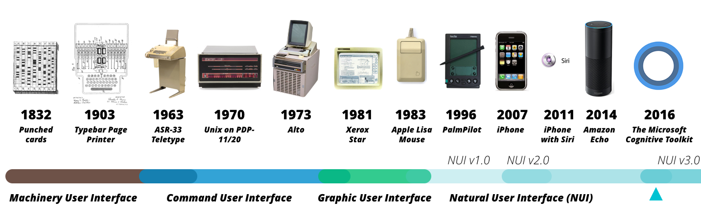

设计为时代服务，两百年里我们所做的都是在为基于主宰地位的计算平台进行设计，它们分别是：从早期的机械交互、命令行交互、到近50年的PC端图形交互界面（GUI）、基于互联网的Web交互平台、基于智能手机的移动交互、直到最近被广泛提起的自然交互界面（NUI）。

现有的设计范式
在过去的40年里，从GUI到移动设计（Mobile Design），改变的是范式（Paradigm）本身，而设计的基础逻辑与前提并没有大的改变，即：
- 一个具有主宰性的交互范式，例如GUI时代的窗口或按钮、移动设计时代的手势操作；
- 一个较为统一的、默认存在于人机交互（HCI）中人们对于机器的认识，例如「机器是为人类服务的」；
- 基于屏幕的设计并没有改变，无论大小、或如何交互，设计师所作依然并未突破屏幕的物理限制；
- 设计必须在现有技术的框架中完成，设计师对于技术的理解仅仅限于什么不可以做。
在这个背景之下，设计师的工作类型无外乎于两种：
- 用任务（Task）驱动的用户体验设计（User Experience Design）；
- 用诉求（Job）驱动的客户体验设计（Customer Experience Design）。
区别在于前者已经假设用户一定会用，多用于专业或中后台应用设计；后者则尝试深入挖掘消费者深层次需求，多用于消费类应用（用Digital解决问题）或服务类（不止用Digital解决问题）设计。
无论我们如何研习和精进设计方法，我们依然难以逃脱基础逻辑和工作范围的束缚，然而IoT时代的来临正在悄然改变这一现状。
被改变的基础逻辑
IoT的基础意涵，并不只在于具有计算能力的物体本身，它包括以下可能的行为能力：
- 感知（Sensing）；
- 处理（Processing）；
- 表现（Presenting）；
- 存储（Storing）；
- 解析（Diagnosing）
- 行动（Acting）；
- 联网（Networking）。
相交于以前统一的交互平台，事情变得复杂多了：
首先，任何一个可计算物体的行为能力都是以上七种行为的组合，例如一辆自动驾驶汽车包含了以上所有行为能力；而一个简单的可联网的温湿度感知报警器，却只包含感知、处理、和联网的行为能力。
其次，可计算物体可大可小，具有相当复杂性的计算物体通常是上千个可计算物体的集合，可塑性极强，单个技术上的更新可能引起整个平台的更迭，这也是为何诸如智能汽车（Smart Car）这样的IoT平台无法形成主宰性统一交互平台的原因。
最后，人机交互可能在无感知的情况下发生，就算发生亦非以人为主的交互，人已不在是交互的主宰，人本设计（Human Centric Design）的理念可能需要更新。
因此，我们所面临的情况是：
- 不再有一个主宰性的交互范式，范式变得灵活多变；
- 人类对于机器的认识已经发生更新，机器是否在为人类服务开始发生动摇；
- 早已超越屏幕的设计，设计将回归传统工业设计时代；
- 设计开始重新塑造技术的可能性，设计师需要了解技术的可能性而非限制性。
全新的设计
在这个全新的背景之下，设计哲学和实践需要重新思考。以下元素在过去的设计时代里是不曾有过的。
大量〇交互的设计
IoT即将出现大量不存在的交互，或未被者感知的交互，未来的对于「好的交互设计」将变成「更不被消费者感知的交互」，相信在未来五年里，将有更多的设计大会用「〇」作为大会的主题。例如，在Amazon Go的设计中，通过计算机视觉（Computer Vision）、传感器网络（Sensor Fusion）、以及深度学习（Deep Learning）技术，消费者完全脱离了屏幕或语音交互的束缚。

观感（Perception）的设计
数字技术已经早已超越技术本身，而建立其独立的「社会含义」，或称之为「增强人性（Augmented Humanity）」，诸如隐私、伦理、和道德都需要进行重新讨论，人类对技术的观感（Perception）需要考虑在设计当中去。例如，Amazon Echo选择用类似圆柱形音响的形态，必然考虑了欧美对于家庭音响的现有接受度。
独立的设计语言
设计师需要全新设计一套独立的设计语言（Design Language），这套语言巧妙隐藏那些透明的〇设计、又塑造着使用者对于技术的观感。
数据的商业潜力
IoT时代的重要特性还包含物理世界的信息被全面数字化和算法化，这使得独立设计语言背后还有一套并行的商业逻辑，传统的先客户后商业模式的设计思维可能发生变化，数据将独立成为设计思维中重要的一环，甚至成为新的入手点也并不为过。
写在最后
虽被Mary Meeker为首的互联网人广泛看好，NUI虽是正在崛起的交互范式，我并不反对NUI作为一次范式革命的意义，但是如果我们面对的是一场「范式的革命」呢？即，如果「我们不再有任何一个主宰性的交互范式」怎么办？
设计永远为现实世界服务，我们所谈论的设计思维和实践方法，皆来自于对现实设计问题的解决，例如，个人计算设备的兴起，触发了以用户为中心的用户体验设计；互联网经济的蓬勃发展，又带动了结合客户需求、技术实现、商业模式的设计思维的发展。
而这有一个前提，是我们有一个主宰性的计算设备（PC机、Web、到Mobile），IoT时代的到来正在打破由一个主宰性计算设备所带来的「主流范式规则」，如果这一规则发生变化，我们所基于此建立的、关于设计的一切，都需要我们进行重新思考。
在最后，让我们来比较前IoT时代与IoT时代设计的区别。
在接下来的讨论里，我将对IoT时代的设计实践、理念、以及设计师做更多的讨论。